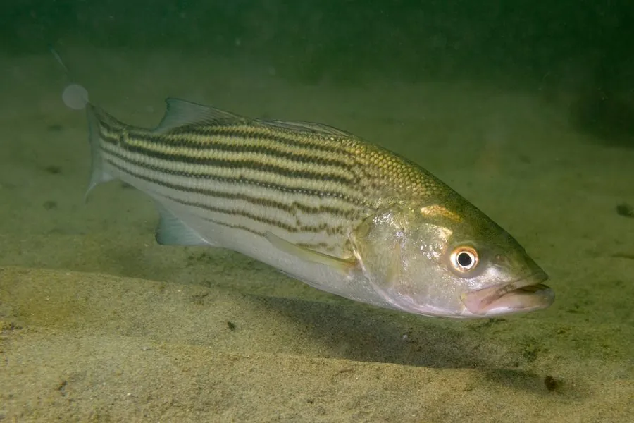

鱼类 · 动物界
条纹鲈 Morone saxatilis

北美东岸的溯河鲈鱼，体侧有数条深色纵纹，秋季溯河产卵，是重要的游钓鱼和养殖对象，已被多地引入。
- 分类
- 门脊索动物门纲辐鳍鱼纲目鲈形目科狼鲈科属狼鲈属
- 栖息环境
- 沿海、河口和河流下游，繁殖期溯河进入淡水
- 地理分布
- 北美东海岸，从加拿大圣劳伦斯河到美国墨西哥湾沿岸
- 保护级别
- IUCN 无危（LC）；中国未列入国家重点保护野生动物名录
物种志
条纹鲈体呈纺锤形，体侧有 6–9 条明显的深色纵纹，背鳍前后两段分离，尾鳍分叉。体色背部橄榄绿或灰蓝，腹部银白。成鱼体长一般 50–100 cm，最大可达 2 m，体重可达 50 kg 以上，雌鱼通常比雄鱼大。
条纹鲈分布于北美东海岸，从加拿大圣劳伦斯河到美国墨西哥湾沿岸。它是溯河洄游鱼类，平时生活在沿海和河口，春季溯河到淡水河段产卵，秋季也有一次洄游。它捕食小鱼、虾蟹和蠕虫，性情凶猛，是游钓爱好者追捧的对象。20 世纪以来，条纹鲈被引入美国西部和亚洲部分水域养殖。由于过度捕捞和河流筑坝，部分种群曾大幅下降，经过管理后有所恢复，IUCN 评估为无危。
形态与习性
- 食性小鱼、虾蟹和蠕虫
- 体长一般 50–100 cm，最大可达 2 m
- 体重常见 2–10 kg，最大可达 50 kg 以上
- 洄游溯河洄游，春季到淡水河段产卵
- 体纹体侧有 6–9 条深色纵纹
- 经济价值重要的游钓鱼和养殖对象
趣味知识
- 条纹鲈体侧的深色纵纹是它最明显的识别特征。
- 它能从海水溯河进入淡水，产卵后再返回沿海。
- 条纹鲈被引入美国西部水库后，成为当地重要的游钓鱼。